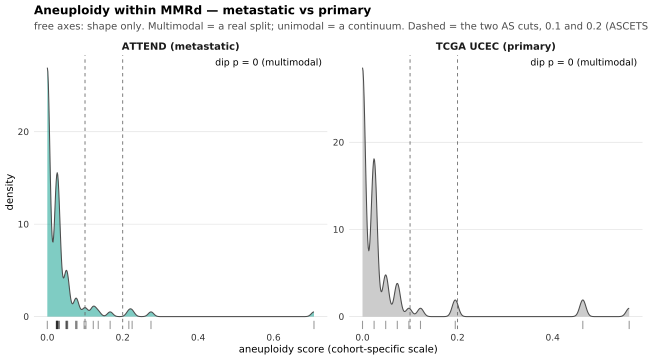
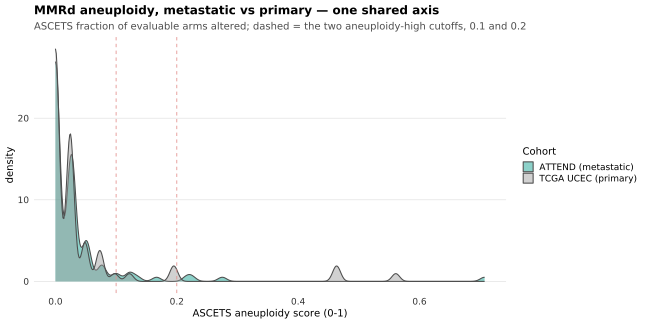
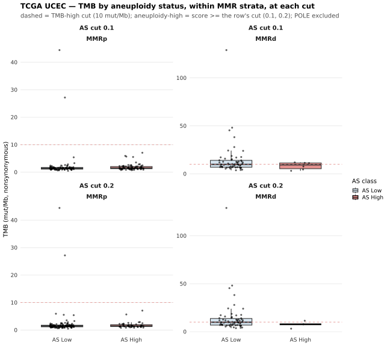

Last updated: 2026-09-25
Checks: 7 0
Knit directory:
attend_aneuploidy/analysis/
This reproducible R Markdown analysis was created with workflowr (version 1.7.2). The Checks tab describes the reproducibility checks that were applied when the results were created. The Past versions tab lists the development history.
Great! Since the R Markdown file has been committed to the Git repository, you know the exact version of the code that produced these results.
Great job! The global environment was empty. Objects defined in the global environment can affect the analysis in your R Markdown file in unknown ways. For reproduciblity it’s best to always run the code in an empty environment.
The command set.seed(20260622) was run prior to running
the code in the R Markdown file. Setting a seed ensures that any results
that rely on randomness, e.g. subsampling or permutations, are
reproducible.
Great job! Recording the operating system, R version, and package versions is critical for reproducibility.
Nice! There were no cached chunks for this analysis, so you can be confident that you successfully produced the results during this run.
Great job! Using relative paths to the files within your workflowr project makes it easier to run your code on other machines.
Great! You are using Git for version control. Tracking code development and connecting the code version to the results is critical for reproducibility.
The results in this page were generated with repository version 53d4271. See the Past versions tab to see a history of the changes made to the R Markdown and HTML files.
Note that you need to be careful to ensure that all relevant files for
the analysis have been committed to Git prior to generating the results
(you can use wflow_publish or
wflow_git_commit). workflowr only checks the R Markdown
file, but you know if there are other scripts or data files that it
depends on. Below is the status of the Git repository when the results
were generated:
Ignored files:
Ignored: .Rhistory
Ignored: .Rproj.user/
Ignored: .mcr_cache/
Ignored: data/aneu_scores.csv
Ignored: data/attend_barcodes.csv
Ignored: data/attend_data.xlsx
Ignored: data/clinical_gianlu_data.csv
Ignored: data/cnv_annotations/
Ignored: data/gistic/
Ignored: data/hrd_scores.csv
Ignored: data/msi_scores.csv
Ignored: data/old2_gistic/
Ignored: data/old_gistic/
Ignored: data/seg/
Ignored: data/tcga_2013/
Ignored: data/tmb_scores.csv
Ignored: data/variant_annotations/
Ignored: gistic2.sif
Ignored: output/clean_data/
Ignored: output/gistic_input/
Note that any generated files, e.g. HTML, png, CSS, etc., are not included in this status report because it is ok for generated content to have uncommitted changes.
These are the previous versions of the repository in which changes were
made to the R Markdown (analysis/11-mmrd-crosscohort.Rmd)
and HTML (docs/11-mmrd-crosscohort.html) files. If you’ve
configured a remote Git repository (see ?wflow_git_remote),
click on the hyperlinks in the table below to view the files as they
were in that past version.
| File | Version | Author | Date | Message |
|---|---|---|---|---|
| html | 53d4271 | sceriff0 | 2026-09-25 | :wrench: site building |
| Rmd | 0f67d88 | bolt3x | 2026-09-21 | :art: Every aneuploidy-keyed figure, at both cuts |
| Rmd | 0c4840a | bolt3x | 2026-09-14 | :art: One vocabulary, one order, and a page that says why a figure is missing |
| Rmd | d688d09 | bolt3x | 2026-09-13 | :art: One spelling and one palette per concept, across every report |
| Rmd | 0348325 | bolt3x | 2026-09-13 | :art: AS High / AS Low, arcsine + t-test on the score, no n=, arms back to red/light blue |
| Rmd | 793a8f2 | bolt3x | 2026-09-07 | :recycle: Reorder the site 00-11, split 07, fold concordance into 01, add ProMisE |
| Rmd | e361b03 | bolt3x | 2026-08-17 | :rewind: Restore report 11 — a68533f deleted it without saying so |
| Rmd | a68533f | bolt3x | 2026-08-17 | :bug: Report 09 drew its clustering matrix, not TCGA Fig. 1a — display the genome |
| Rmd | 3cf3175 | bolt3x | 2026-08-17 | :bug: attend_box() takes no geom_boxplot passthrough — and guard the call sites |
| Rmd | 68dfcad | bolt3x | 2026-08-17 | :sparkles: Reports 10 and 11 — the classification applied to TCGA data |
Question. Does aneuploidy substructure MMR-deficient tumours in metastatic disease (ATTEND) in a way that is absent from primary disease (TCGA UCEC)? Cohort. MMR-deficient only, in both cohorts, side by side. Reads. The master (built on demand by get_master()) for the ATTEND arm; data/tcga_2013/ plus ASCETS run on its segments for the TCGA arm. Out of scope. The ATTEND MMRd split itself, against mutations and composition -> 04-aneuploidy-mmrd. ATTEND TMB bimodality and its own TCGA replication -> 06-tmb. Every ATTEND survival model -> 02-survival. Cluster-level correspondence between the two cohorts -> 09-tcga2013-fig1a. The aneuploidy classes, the two cuts and why both are reported -> 00-methods.
ATTEND is a cohort of metastatic endometrial tumours; TCGA UCEC is primary. 04-aneuploidy-mmrd works inside ATTEND’s MMR-deficient stratum, where aneuploidy appears to carve the group in two. This report asks whether that is specific to metastatic disease, on four measurements that fail in different ways, so no single one has to carry the answer:
Every aneuploidy-keyed figure and table here is drawn at both cuts, 0.1 and 0.2 — attend_thresholds$aneuploidy and $aneuploidy_alt, returned as a pair by aneu_cuts(); 00-methods holds the justification and is not restated. The cut is load-bearing for this report’s central question, so a result that survives only one of the two is a result about the threshold. Panels that plot the continuous score carry no class and are therefore drawn once, with both cuts as reference lines instead of as a facet.
The shared axis is the load-bearing piece. ATTEND’s aneuploidy score
is ASCETS (fraction of evaluable arms altered, 0–1); the cBioPortal
column is Taylor et al. 2018, a count of altered arms (0–39).
No constant converts one into the other, because ASCETS’s denominator is
the per-sample number of evaluable arms.
code/run_ascets_tcga.sh removes the obstacle by running
ASCETS on TCGA’s own segments, producing the same
statistic on both sides; without that output every scale-dependent panel
below is skipped rather than computed on incomparable numbers.
Calling stringency is matched where it can be: ATTEND runs
ascets(min_boc = 0.5, alteration_threshold = 0.7) and
leaves threshold and noise at their defaults —
a fixed ±0.2 log2 cutoff with no LCR noise modelling — and
run_ascets_tcga.sh uses those same values. (ATTEND runs
ASCETS per sample and the TCGA script runs it pooled; with a fixed
threshold that is equivalent, since the only cohort-level step in ASCETS
is the noise-threshold estimation, which is not in use.) One
difference cannot be removed here: ATTEND is tumour-only DRAGEN
WES with no purity/ploidy correction, TCGA is purity-corrected SNP6.
Low-purity ATTEND tumours have compressed log2 ratios and will
under-call arms, so an ATTEND-higher result is conservative —
but the assay difference also changes which arms clear the coverage cut,
so a small level difference is suggestive, not decisive.
The ATTEND arm is the MMR-deficient stratum of the master, taken
through mmrd_aneuploidy_split(), whose MMRd criterion is
MMR-protein loss by IHC — 00-methods explains why MSI-high is a
correlate and not a criterion. Its aneuploidy values are the ASCETS
scores loaded from data/ascets/.
The TCGA arm prefers the 2013 publication cohort
(data/tcga_2013/, via load_tcga_ucec_2013())
joined to ASCETS run on its segments
(load_tcga_2013_ascets()), which is what creates the shared
scale. Its MMRd rule is attend_tcga_ref_2013$mmrd_rule,
whose default "tcga_exact" makes MMRd the paper’s
own MSI (hyper-mutated) integrative cluster and nothing else:
every other classified tumour is MMRp, and the tumours TCGA never
classified are NA — unclassified, not proficient. That is the only rule
whose output can be quoted as “TCGA’s MSI group”. If the ASCETS output
is absent the report falls back to the legacy PanCanAtlas export
(load_tcga_ucec(), Taylor arm count) and drops every
scale-dependent panel, saying so in the table.
Both cohorts are classified by one helper over one cut
vector: add_aneuploidy_cuts() re-derives
aneuploidy_class at each cut from
attend_cols$aneuploidy, for the ATTEND rows
(master_cuts) and for the TCGA rows
(tcga_cuts_df) alike. same_cut records whether
the two vectors are identical and gates every cross-cohort panel below,
because ATTEND at 0.1 drawn beside TCGA at 0.2 would be a comparison of
two different questions. The last table is the cost of the choice in
ATTEND MMRd patients: raising a cut can only demote, so the two
classifications are nested and the movers score between them.
master <- get_master() |> add_molecular_classes()
# The same patients once per cut, with aneuploidy_class and the MMR x AS group re-derived at
# each. Every cut-dependent panel facets on as_cut_lab instead of being written twice.
master_cuts <- add_aneuploidy_cuts(master, scna = TRUE)
attend_mmrd <- mmrd_aneuploidy_split(master)
attend_aneu <- if (!is.null(attend_mmrd))
attend_mmrd$aneu_value[is.finite(attend_mmrd$aneu_value)] else numeric(0)
t13 <- tryCatch(load_tcga_ucec_2013(), error = function(e) tibble())
tas <- tryCatch(load_tcga_2013_ascets(), error = function(e) tibble())
use_ascets <- nrow(t13) > 0 && nrow(tas) > 0
if (use_ascets) {
tcga <- t13 |>
left_join(tas, by = "ID") |>
distinct(pid, .keep_all = TRUE) |> # survival is a per-PATIENT analysis
transmute(pid, mmrd, pole, tmb, aneuploidy = ascets_aneuploidy, cn_cluster_k4,
os_months, os_event, pfs_months, pfs_event, stage, grade)
tcga_scale <- "ASCETS (fraction of evaluable arms, 0-1) — SAME statistic as ATTEND"
tcga_source <- "data/tcga_2013/ascets/ (code/run_ascets_tcga.sh)"
} else {
tcga <- tryCatch(load_tcga_ucec(), error = function(e) tibble())
if (nrow(tcga) > 0) tcga <- tcga |>
mutate(pfs_months = NA_real_, pfs_event = NA_integer_,
stage = NA_character_, grade = NA_character_, cn_cluster_k4 = NA_character_,
pole = NA, tmb = suppressWarnings(as.numeric(tmb)))
tcga_scale <- paste0("cBioPortal ", attend_tcga_ref$aneuploidy_col,
" (Taylor 2018 arm COUNT, 0-39) — NOT ATTEND's scale")
tcga_source <- "data/tcga/ (code/fetch_tcga_ucec.R)"
}
tcga_mmrd <- if (nrow(tcga) > 0) filter(tcga, mmrd) else tcga
tcga_aneu <- if (nrow(tcga_mmrd) > 0) tcga_mmrd$aneuploidy[is.finite(tcga_mmrd$aneuploidy)] else numeric(0)
lab_attend <- "ATTEND (metastatic)"
lab_tcga <- "TCGA UCEC (primary)"
have_attend <- length(attend_aneu) >= 4
have_tcga <- length(tcga_aneu) >= 4
# Every LEVEL comparison below requires both cohorts on the ASCETS [0,1] scale. Shape
# comparisons do not, because bimodality is scale-invariant.
comparable <- use_ascets && have_attend && have_tcga &&
all(is.finite(range(attend_aneu))) && max(attend_aneu, na.rm = TRUE) <= 1
# ONE cut vector per cohort, and the cross-cohort panels run only when the two are
# IDENTICAL. ATTEND is always on the ASCETS [0,1] scale, so it always carries the configured
# pair. TCGA carries the SAME pair when ASCETS has been run on its segments; on the
# arm-COUNT fallback 0.1 and 0.2 are not its scale's numbers at all — a 0.1 line there sits
# against the axis and would call every tumour aneuploidy-high — so it falls back to a
# single within-cohort median, labelled with its own value. same_cut is the guard that makes
# "ATTEND at 0.1 beside TCGA at 0.2" impossible rather than merely unintended.
tcga_all_aneu <- if (nrow(tcga) > 0) tcga$aneuploidy[is.finite(tcga$aneuploidy)] else numeric(0)
tcga_cuts <- if (comparable) cuts else
if (length(tcga_all_aneu) > 0) stats::median(tcga_all_aneu) else numeric(0)
same_cut <- comparable && identical(as.numeric(tcga_cuts), as.numeric(cuts))
# ⚠️ TWO fallback medians, on purpose. Part 4 compares MMRd against MMRp, so its fallback cut
# is the WHOLE cohort's median. Part 5 asks whether aneuploidy substructures MMRd — a
# WITHIN-stratum question — so its fallback is the MMRd subset's own median. They are the
# same number only by accident: MMRd tumours are quieter than UCEC as a whole (which carries
# the serous, copy-number-high arm), so splitting MMRd at the cohort median can leave an
# "aneuploidy-high" arm of two patients and answer the substructure question with an empty
# cell. When ASCETS has been run on TCGA both collapse to the configured pair and this is
# moot. Each part labels the cut it used.
#
# The TCGA frame once per cut goes through the SAME helper on the SAME column name the ATTEND
# rows go through: one derivation, so the two halves cannot drift to different rules.
tcga_cuts_df <- if (length(tcga_cuts) > 0 && nrow(tcga) > 0) {
tcga |>
mutate(!!attend_cols$aneuploidy := aneuploidy) |>
add_aneuploidy_cuts(cuts = tcga_cuts) |>
tibble::as_tibble()
} else tibble()
# Part 5's frame: MMRd only, cut at MMRd's own median on the fallback scale.
tcga_mmrd_cuts <- if (comparable) cuts else
if (length(tcga_aneu) > 0) stats::median(tcga_aneu) else numeric(0)
tcga_mmrd_cuts_df <- if (length(tcga_mmrd_cuts) > 0 && nrow(tcga_mmrd) > 0) {
tcga_mmrd |>
mutate(!!attend_cols$aneuploidy := aneuploidy) |>
add_aneuploidy_cuts(cuts = tcga_mmrd_cuts) |>
tibble::as_tibble()
} else tibble()
knitr::kable(tibble(
cohort = c(lab_attend, lab_tcga),
MMRd_n = c(length(attend_aneu), length(tcga_aneu)),
scale = c("ASCETS (fraction of evaluable arms, 0-1)", tcga_scale),
source = c("data/ascets/ (DRAGEN .seg)", tcga_source)),
caption = "MMR-deficient tumours per cohort, and the aneuploidy statistic each uses.")| cohort | MMRd_n | scale | source |
|---|---|---|---|
| ATTEND (metastatic) | 109 | ASCETS (fraction of evaluable arms, 0-1) | data/ascets/ (DRAGEN .seg) |
| TCGA UCEC (primary) | 65 | ASCETS (fraction of evaluable arms, 0-1) — SAME statistic as ATTEND | data/tcga_2013/ascets/ (code/run_ascets_tcga.sh) |
cat("\nAneuploidy cuts — ATTEND: ", paste(cuts, collapse = ", "),
" | TCGA: ", if (length(tcga_cuts) > 0) paste(signif(tcga_cuts, 3), collapse = ", ") else "none",
if (same_cut) " — IDENTICAL, so the cross-cohort panels run.\n" else
" — NOT identical, so every cross-cohort class panel is skipped.\n", sep = "")
Aneuploidy cuts — ATTEND: 0.1, 0.2 | TCGA: 0.1, 0.2 — IDENTICAL, so the cross-cohort panels run.# The ATTEND MMRd arm at each cut, from master_cuts. mmrd_aneuploidy_split() above and
# add_aneuploidy_cuts() here select MMRd through the same is_mmrd() IHC criterion and read
# the same attend_cols$aneuploidy column, so these are the same patients as attend_aneu,
# classified at the fixed cut rather than at the split's optionally GMM-refined boundary.
attend_by_cut <- master_cuts |>
filter(is_mmrd(MMR_class) %in% TRUE, !is.na(aneuploidy_class)) |>
count(as_cut_lab, class = as_label(aneuploidy_class)) |>
tidyr::pivot_wider(names_from = class, values_from = n, values_fill = 0)
knitr::kable(attend_by_cut, caption = paste0(
"ATTEND MMRd tumours per aneuploidy class at each cut. Raising the cut can only demote, ",
"so the two classifications are nested and the difference between the AS High counts is ",
"the number of patients the choice of threshold moves."))| as_cut_lab | AS High | AS Low |
|---|---|---|
| AS cut 0.1 | 9 | 100 |
| AS cut 0.2 | 4 | 105 |
# cat(), not message() — see note_skip() in attend_plots.R for why (message = FALSE).
if (!have_tcga)
cat("\n**No TCGA MMRd data** — run `Rscript code/fetch_tcga_ucec_2013.R`, then re-knit.\n")
if (nrow(t13) > 0 && !use_ascets)
cat("\n**TCGA 2013 clinical present but no ASCETS output** — run `bash code/run_ascets_tcga.sh`",
"to unlock the shared-scale panels (Parts 2 and 3).\n")Aneuploidy density within MMRd, one panel per cohort, each annotated
with Hartigan’s dip-test p from
dip_bimodality() — a small p means the distribution is
multimodal, i.e. a real split rather than a continuum. The panels are
free-scaled on purpose: this figure compares shape
only, and putting two different statistics on one axis would invite
exactly the level comparison that Part 2 gates behind the shared scale.
TCGA is drawn in the reference grey and only ATTEND carries a hue,
because TCGA is the external cohort the ATTEND result is measured
against. The dip test needs at least four finite values and the optional
diptest package; where either is missing the annotation
says so instead of printing a number. The score is plotted
raw, so no class and no cut enters this panel: both
cuts appear only as dashed reference lines, and only on a panel whose
axis is the ASCETS [0,1] scale — on the arm-count fallback the TCGA
panel carries no line, because 0.1 and 0.2 are not numbers on that
axis.
dip_a <- dip_bimodality(attend_aneu)
dip_t <- dip_bimodality(tcga_aneu)
# Braces required: a function body of the bare form `if (x) a` with `else` on the NEXT line
# is an R syntax error, the same trap the survival-cut label below carries.
dip_lab <- function(d) {
if (is.finite(d$p)) {
sprintf("dip p = %.3g%s", d$p,
ifelse(isTRUE(d$bimodal), " (multimodal)", " (unimodal)"))
} else "diptest unavailable"
}
dens_df <- bind_rows(
if (have_attend) tibble(cohort = lab_attend, aneu = attend_aneu) else NULL,
if (have_tcga) tibble(cohort = lab_tcga, aneu = tcga_aneu) else NULL)
if (nrow(dens_df) > 0) {
labs_df <- tibble(cohort = c(lab_attend, lab_tcga),
lab = c(dip_lab(dip_a), dip_lab(dip_t))) |>
filter(cohort %in% dens_df$cohort)
# Reference lines per PANEL, not per figure: ATTEND is always ASCETS, TCGA only when
# run_ascets_tcga.sh has been run. Drawing 0.1 on an arm-count axis would put the line at
# the origin and read as "every TCGA tumour is aneuploidy-high".
cut_df <- bind_rows(
if (have_attend) tibble(cohort = lab_attend, xc = cuts) else NULL,
if (have_tcga && use_ascets) tibble(cohort = lab_tcga, xc = cuts) else NULL)
p <- ggplot(dens_df, aes(aneu)) +
geom_density(aes(fill = cohort), colour = "grey30", alpha = 0.5, adjust = 0.9) +
geom_rug(alpha = 0.4) +
geom_text(data = labs_df, aes(x = Inf, y = Inf, label = lab),
hjust = 1.05, vjust = 1.5, size = 3.3) +
facet_wrap(~ cohort, scales = "free") +
scale_fill_manual(values = attend_cohort_cols, guide = "none") +
labs(title = "Aneuploidy within MMRd — metastatic vs primary",
subtitle = paste0("free axes: shape only. Multimodal = a real split; unimodal = a ",
"continuum. Dashed = the two AS cuts, ",
paste(cuts, collapse = " and "), " (ASCETS panels only)"),
x = "aneuploidy score (cohort-specific scale)", y = "density") +
attend_theme()
if (nrow(cut_df) > 0)
p <- p + geom_vline(data = cut_df, aes(xintercept = xc), linetype = "dashed",
colour = "grey40", linewidth = 0.4)
print(p)
} else cat("No aneuploidy data for either cohort yet.\n")
| Version | Author | Date |
|---|---|---|
| 53d4271 | sceriff0 | 2026-09-25 |
The same dip test as a table, so the statistic and n are legible
rather than read off a panel annotation. Read n first: with
a handful of tumours per cohort the dip test has very little power, so a
non-significant p is weak evidence of unimodality and not evidence of
it. One row per cohort and not per cut: the dip statistic is computed on
the raw score vector and never sees a class, so both cuts would return
the identical number.
knitr::kable(tibble(
cohort = c(lab_attend, lab_tcga),
n = c(dip_a$n, dip_t$n),
dip_stat = round(c(dip_a$dip, dip_t$dip), 4),
dip_p = signif(c(dip_a$p, dip_t$p), 3),
multimodal = c(dip_a$bimodal, dip_t$bimodal)),
caption = paste0("Hartigan dip test per cohort, on the MMRd aneuploidy values. ",
"Scale-invariant, so it is valid even on the arm-count fallback."))| cohort | n | dip_stat | dip_p | multimodal |
|---|---|---|---|---|
| ATTEND (metastatic) | 109 | 0.1117 | 0 | TRUE |
| TCGA UCEC (primary) | 65 | 0.1462 | 0 | TRUE |
Part 1 compared shape; this compares level, which the shared ASCETS scale makes legitimate. Both axes are now “fraction of evaluable chromosome arms altered”, so the two densities can be drawn on one axis and the medians compared directly. The dashed lines are the two aneuploidy-high cutoffs, 0.1 and 0.2, drawn in the aneuploidy-high colour because that is what they mark — and they now mean the same thing in both cohorts. The figure is not faceted by cut: it plots the raw score with no class, so the cut changes nothing in it except where the lines fall, which is exactly the comparison a reader needs in order to judge either cut.
The test is a Mann–Whitney (rank-based, no distributional assumption) on the two MMRd aneuploidy vectors, reported with the rank-biserial effect size, because a p-value alone is uninformative when the group sizes differ by an order of magnitude. It is one test and not one per cut, for the same reason: it ranks the scores themselves and never thresholds them. The whole part is skipped unless ASCETS has been run on TCGA: on mismatched scales the comparison is meaningless rather than merely imprecise. Interpret the size of any shift against the purity/platform asymmetry stated at the top — the two uncorrectable biases run in opposite directions, so a small shift is not interpretable in either direction.
if (comparable) {
both <- bind_rows(tibble(cohort = lab_attend, aneu = attend_aneu),
tibble(cohort = lab_tcga, aneu = tcga_aneu))
w <- suppressWarnings(stats::wilcox.test(attend_aneu, tcga_aneu))
# rank-biserial r = 1 - 2U/(n1*n2); negated below so positive = ATTEND higher.
U <- unname(w$statistic); rbc <- 1 - 2 * U / (length(attend_aneu) * length(tcga_aneu))
md <- both |> group_by(cohort) |>
summarise(n = n(), median = round(median(aneu), 3),
IQR = paste0(round(quantile(aneu, .25), 3), "-", round(quantile(aneu, .75), 3)),
.groups = "drop")
knitr::kable(md, caption = paste0(
"MMRd aneuploidy on the SHARED ASCETS scale. Mann-Whitney p = ", signif(w$p.value, 3),
"; rank-biserial r = ", round(-rbc, 3), " (positive = ATTEND higher)."))
ggplot(both, aes(aneu, fill = cohort)) +
geom_density(colour = "grey30", alpha = 0.45, adjust = 0.9) +
# BOTH cuts, because this panel carries no class: the lines are the only thing the
# choice of threshold changes here.
geom_vline(xintercept = cuts, linetype = "dashed",
colour = attend_aneu_high, linewidth = 0.4) +
scale_fill_manual(values = attend_cohort_cols, name = attend_cohort_legend) +
labs(title = "MMRd aneuploidy, metastatic vs primary — one shared axis",
subtitle = paste0("ASCETS fraction of evaluable arms altered; dashed = the two ",
"aneuploidy-high cutoffs, ", paste(cuts, collapse = " and ")),
x = "ASCETS aneuploidy score (0-1)", y = "density") +
attend_theme()
} else if (!use_ascets) {
cat("Level comparison skipped — needs ASCETS on TCGA. Run `bash code/run_ascets_tcga.sh`.\n")
} else cat("Level comparison skipped — ATTEND aneuploidy is not on the [0,1] ASCETS scale.\n")
| Version | Author | Date |
|---|---|---|
| 53d4271 | sceriff0 | 2026-09-25 |
Part 1 asks whether a split exists and Part 2 whether the whole distribution shifts. This asks the simplest question of the three: what fraction of MMRd tumours cross the aneuploidy line, in each cohort? A 2×2 and a Fisher exact test, with exact Clopper–Pearson intervals on each proportion. It needs no distributional assumption and no survival event, which is why the intervals are the part to read: with a small aneuploidy-high count on either side the interval stays wide even when the point estimates differ substantially, and a wide interval is the honest summary.
This is the arm the cut moves most, so it is computed at
both cuts, 0.1 and 0.2, one block of rows each, with
its own Fisher test per cut — the two cuts are never
pooled into one test, because they are two different questions about the
same patients. Inside each block a single k is applied to
both cohorts in the same expression, which is what makes “ATTEND at one
cut, TCGA at another” impossible rather than merely unintended; the
whole table is additionally gated on same_cut. The arm is
skipped on the arm-count fallback because neither cut is transferable
there. The fixed cutoffs are used deliberately, not the
GMM-refined boundary mmrd_aneuploidy_split() can compute:
that boundary is fitted to ATTEND’s own distribution, so applying it to
TCGA would beg the question this part asks.
prop_ci <- function(x, n) { # Clopper-Pearson exact interval
if (n == 0) return("n/a")
ci <- stats::binom.test(x, n)$conf.int
sprintf("%.1f%% (%.1f-%.1f)", 100 * x / n, 100 * ci[1], 100 * ci[2])
}
if (same_cut) {
# ONE k per block, applied to both cohorts in the SAME expression and with the same
# `>= k` rule add_molecular_classes() uses, so the two halves of a row cannot be counted
# at different thresholds. The test is inside the block: cuts are never pooled.
prop_at <- function(k) {
a_hi <- sum(attend_aneu >= k); a_n <- length(attend_aneu)
t_hi <- sum(tcga_aneu >= k); t_n <- length(tcga_aneu)
ft <- stats::fisher.test(matrix(c(a_hi, a_n - a_hi, t_hi, t_n - t_hi), nrow = 2))
tibble(cut = as.character(as_cut_label(k, cuts)),
cohort = c(lab_attend, lab_tcga),
MMRd_n = c(a_n, t_n),
aneuploidy_high = c(a_hi, t_hi),
percent = c(prop_ci(a_hi, a_n), prop_ci(t_hi, t_n)),
fisher_p = signif(ft$p.value, 3),
odds_ratio = sprintf("%.2f (%.2f-%.2f)", ft$estimate,
ft$conf.int[1], ft$conf.int[2]))
}
knitr::kable(bind_rows(lapply(cuts, prop_at)), caption = paste0(
"MMRd tumours at or above each shared ASCETS cutoff (>= ",
paste(cuts, collapse = ", "), "). Fisher exact and the odds ratio are computed ",
"SEPARATELY within each cut and repeat down its two rows; percentages carry exact ",
"Clopper-Pearson intervals. ATTEND is the first row of each pair, so the odds ratio ",
"reads ATTEND against TCGA at that cut."))
} else cat("Skipped — needs ASCETS on TCGA so both cohorts share the same cutoffs.",
"Run `bash code/run_ascets_tcga.sh`.\n")| cut | cohort | MMRd_n | aneuploidy_high | percent | fisher_p | odds_ratio |
|---|---|---|---|---|---|---|
| AS cut 0.1 | ATTEND (metastatic) | 109 | 9 | 8.3% (3.8-15.1) | 1 | 0.89 (0.27-3.18) |
| AS cut 0.1 | TCGA UCEC (primary) | 65 | 6 | 9.2% (3.5-19.0) | 1 | 0.89 (0.27-3.18) |
| AS cut 0.2 | ATTEND (metastatic) | 109 | 4 | 3.7% (1.0-9.1) | 1 | 0.79 (0.13-5.56) |
| AS cut 0.2 | TCGA UCEC (primary) | 65 | 3 | 4.6% (1.0-12.9) | 1 | 0.79 (0.13-5.56) |
A second reference point taken entirely from TCGA’s published
data: how many of TCGA’s MMRd tumours were assigned to
copy-number cluster 4, its serous-like SCNA cluster?
Both fields are TCGA’s own (integrative cluster and
CNA_CLUSTER_K4, Suppl. Data File S1.1), so this proportion
involves no cutoff, no ASCETS and no choice of ours — and so is one
table, not one per cut. It is not the same criterion as
the table above — cluster membership rather than an aneuploidy threshold
— so the two are not interchangeable and only the shared-cutoff table
supports a like-for-like test. This is a sanity anchor: if either shared
cutoff puts a wildly different fraction of TCGA MMRd above the line than
TCGA’s own clustering did, that cutoff is drawing a different line than
the clustering, and that needs explaining before either number is
quoted. The cross-tabulation is a derived observation — the paper
reports cluster 4’s histology composition but never its subtype
composition — so it is not quotable from the publication.
if (have_tcga && "cn_cluster_k4" %in% names(tcga_mmrd) && any(!is.na(tcga_mmrd$cn_cluster_k4))) {
d <- tcga_mmrd |> filter(!is.na(cn_cluster_k4))
n4 <- sum(as.character(d$cn_cluster_k4) == "4")
knitr::kable(tibble(
definition = "TCGA MMRd in copy-number cluster 4 (serous-like)",
MMRd_n = nrow(d),
in_cluster4 = n4,
percent = prop_ci(n4, nrow(d))),
caption = "TCGA's own published assignment — no threshold, no ASCETS, no choice of ours.")
} else cat("Published-anchor table skipped — needs the 2013 cohort with CNA_CLUSTER_K4.\n")| definition | MMRd_n | in_cluster4 | percent |
|---|---|---|---|
| TCGA MMRd in copy-number cluster 4 (serous-like) | 65 | 2 | 3.1% (0.4-10.7) |
06-tmb Part 2 asks, in ATTEND: within each MMR stratum, does TMB differ between aneuploidy-high and aneuploidy-low tumours? Splitting by MMR first matters because the two routes to a genomic extreme are distinct — MMR-deficient tumours are hypermutators (high TMB, often modest aneuploidy), whereas the CN-high / serous-like route drives high aneuploidy at low TMB. If aneuploidy-high and TMB-high were the same tumours, aneuploidy would add nothing to TMB; the interest is in their being different axes. This part puts the same question to TCGA.
TMB here is TCGA’s TMB_NONSYNONYMOUS from
data_clinical_sample.txt, available on the exome-sequenced
subset, split at attend_thresholds$tmb = 10 mut/Mb. It is
not either of ATTEND’s two reported definitions and is
never plotted alongside them — it is a different cohort’s single number,
and 00-methods fixes what the two ATTEND
definitions are. It also needs no ancestry correction: ATTEND recomputes
ancestry-aware TMB because its TMB is tumour-only, so residual
private germline variants leak into the count in an ancestry-structured
way, whereas TCGA’s value comes from tumour/normal
paired exomes where the matched normal already removes
germline variants per patient. Applying a Nassar-style correction to it
would subtract a bias that has already been removed.
POLE is excluded from MMRp, and that is not
optional. POLE-ultramutated tumours have a median TMB two
orders of magnitude above the copy-number groups, so leaving them in
MMRp would make that panel unreadable and misrepresent MMRp as high-TMB.
ATTEND has no POLE cases, so excluding them is also what makes the two
cohorts’ MMRp groups comparable; the POLE count and median are printed
separately for reference. The aneuploidy class is taken from
tcga_cuts_df, i.e. re-derived at each cut by
add_aneuploidy_cuts() rather than thresholded here, so the
counts below are a partition per cut and the panels that follow can
facet on it. Where ASCETS has not been run on TCGA the cut vector
collapses to that cohort’s own median and the page says so, because 0.1
and 0.2 are ASCETS [0,1] numbers with no meaning on an arm count.
have_tcga_tmb <- nrow(tcga) > 0 && "tmb" %in% names(tcga) && any(is.finite(tcga$tmb))
# aneuploidy_class comes from tcga_cuts_df — already re-derived once per cut by the same
# helper the ATTEND rows go through — so nothing here re-implements the threshold rule.
tcga_tmb <- if (have_tcga_tmb && nrow(tcga_cuts_df) > 0) {
tcga_cuts_df |>
mutate(mmr_group = dplyr::case_when(!is.na(pole) & pole ~ "POLE",
mmrd %in% TRUE ~ "MMRd",
mmrd %in% FALSE ~ "MMRp",
TRUE ~ NA_character_)) |>
filter(is.finite(tmb), !is.na(aneuploidy_class), mmr_group %in% c("MMRp", "MMRd")) |>
mutate(mmr_group = factor(mmr_group, levels = c("MMRp", "MMRd")))
} else tibble()
if (nrow(tcga_tmb) > 0) {
pole_n <- sum(!is.na(tcga$pole) & tcga$pole)
pole_med <- suppressWarnings(stats::median(tcga$tmb[!is.na(tcga$pole) & tcga$pole], na.rm = TRUE))
if (!same_cut)
note_skip("The configured cuts (", paste(cuts, collapse = " and "), ") are ASCETS [0,1] ",
"numbers and do not transfer to TCGA's arm COUNT, so the panels below are ",
"drawn at ONE cut — TCGA's own within-cohort median, ",
signif(tcga_cuts, 3), ". Run `bash code/run_ascets_tcga.sh` for both.")
cat("patients per cut x MMR group x aneuploidy status:\n")
print(tcga_tmb |>
count(as_cut_lab, mmr_group, class = as_label(aneuploidy_class)) |>
tidyr::pivot_wider(names_from = class, values_from = n, values_fill = 0))
cat("\nPOLE (excluded from the panels): n = ", pole_n,
", median TMB = ", round(pole_med, 1), " mut/Mb\n", sep = "")
} else cat("TMB part skipped — needs the 2013 cohort with TMB_NONSYNONYMOUS.\n")patients per cut x MMR group x aneuploidy status:
# A tibble: 4 × 4
as_cut_lab mmr_group `AS High` `AS Low`
<fct> <fct> <int> <int>
1 AS cut 0.1 MMRp 74 76
2 AS cut 0.1 MMRd 6 59
3 AS cut 0.2 MMRp 44 106
4 AS cut 0.2 MMRd 3 62
POLE (excluded from the panels): n = 17, median TMB = 225.9 mut/MbTCGA TMB in aneuploidy-high versus aneuploidy-low tumours, one column
per MMR group and one row per aneuploidy cut, boxes
filled by aneuploidy status and the dashed line at the TMB-high cut.
attend_box() picks the mark per facet cell from the data —
box and points where the cell has at least ten patients, a median
crossbar and points below that — so by carries the cut as
well as the MMR group, or a cell’s mark would be chosen from both cuts’
patients at once. The TCGA MMRd aneuploidy-high cell is small and
quartiles drawn from a handful of values would be an artefact of which
two landed in the middle. The layout is facet_wrap() over
both variables rather than facet_grid() because each panel
needs its own y axis: MMRd TMB sits an order of
magnitude above MMRp, and facet_grid() frees y by row only,
which would put the two MMR groups back on one scale.
if (nrow(tcga_tmb) > 0) {
# fill rides the TOP-LEVEL aes and attend_box(fill = NULL) inherits it — the idiom every
# other semantic-fill box in the pipeline uses. attend_box() applies outlier.shape = NA
# itself (it always draws the points, so an outlier layer would double-plot patients);
# it takes no geom_boxplot passthrough, so naming one here is an error, not a no-op.
ggplot(tcga_tmb, aes(aneuploidy_class, tmb, fill = aneuploidy_class)) +
attend_box(tcga_tmb, x = "aneuploidy_class", y = "tmb",
by = c("mmr_group", "as_cut_lab"), fill = NULL) +
geom_hline(yintercept = attend_thresholds$tmb, linetype = "dashed",
colour = attend_aneu_high, linewidth = 0.4) +
scale_fill_manual(values = attend_aneu_cols, labels = as_label, name = attend_as_legend) +
scale_x_discrete(labels = as_label) +
facet_wrap(~ as_cut_lab + mmr_group, scales = "free_y",
nrow = dplyr::n_distinct(tcga_tmb$as_cut_lab)) +
labs(title = "TCGA UCEC — TMB by aneuploidy status, within MMR strata, at each cut",
subtitle = paste0("dashed = TMB-high cut (", attend_thresholds$tmb, " mut/Mb); ",
"aneuploidy-high = score >= the row's cut (",
paste(signif(tcga_cuts, 3), collapse = ", "), "); POLE excluded"),
x = NULL, y = "TMB (mut/Mb, nonsynonymous)") +
attend_theme()
} else cat("No TCGA TMB/aneuploidy data to plot.\n")
| Version | Author | Date |
|---|---|---|
| 53d4271 | sceriff0 | 2026-09-25 |
The same contrast as counts: the TMB-high fraction on each side of the aneuploidy line, within each MMR group and within each cut, with a Fisher exact test per cell of that grid — the cut is a grouping key, never pooled, since pooling would count the same patient twice under two classifications. The test is withheld — reported as NA — wherever an aneuploidy group holds fewer than three patients, because a 2×2 with a cell of one or two produces a p-value that moves entirely with a single reclassification; the higher cut demotes patients into the low arm, so a row can lose its test even where the lower cut kept one.
if (nrow(tcga_tmb) > 0) {
tab <- tcga_tmb |>
group_by(as_cut_lab, mmr_group) |>
group_modify(function(.x, ...) {
hi <- .x$tmb >= attend_thresholds$tmb
is_lo <- .x$aneuploidy_class == "aneuploidy-low"
n_lo <- sum(is_lo); n_hi <- sum(!is_lo)
hilo <- sum(is_lo & hi); hihi <- sum(!is_lo & hi)
p <- if (n_lo >= 3 && n_hi >= 3)
suppressWarnings(stats::fisher.test(
matrix(c(hilo, n_lo - hilo, hihi, n_hi - hihi), 2))$p.value) else NA_real_
tibble(aneu_low_n = n_lo, TMBhi_in_low = hilo,
aneu_high_n = n_hi, TMBhi_in_high = hihi,
fisher_p = if (is.na(p)) NA_character_ else signif(p, 3))
})
knitr::kable(tab, caption = paste0(
"TMB-high (>= ", attend_thresholds$tmb, " mut/Mb) fraction by aneuploidy status, within ",
"each MMR group at each cut. Fisher exact per cut x MMR group, never pooled across ",
"cuts; NA when an aneuploidy group has < 3 patients."))
} else cat("TMB 2x2 skipped.\n")| as_cut_lab | mmr_group | aneu_low_n | TMBhi_in_low | aneu_high_n | TMBhi_in_high | fisher_p |
|---|---|---|---|---|---|---|
| AS cut 0.1 | MMRp | 76 | 2 | 74 | 0 | 0.497 |
| AS cut 0.1 | MMRd | 59 | 28 | 6 | 3 | 1.000 |
| AS cut 0.2 | MMRp | 106 | 2 | 44 | 0 | 1.000 |
| AS cut 0.2 | MMRd | 62 | 30 | 3 | 1 | 1.000 |
Parts 1–3 ask whether a split exists; this asks whether it carries
outcome signal in primary disease. Read the event count before
the p-value, and treat this part as descriptive only. TCGA UCEC
is an early-stage, long-follow-up cohort with very few events among MMRd
patients — of the order of a dozen deaths under the
"tcga_exact" rule. At that event count the test cannot
detect even a large hazard ratio, so a non-significant result here is
not evidence that the split is absent in primary
disease, and a significant one is fragile, threshold-dependent noise.
The arms that can discriminate are shape, level and prevalence.
The cuts are ATTEND’s own cutpoints when the scales match and, otherwise, a single median taken within the MMRd subset itself — this part asks whether aneuploidy substructures MMRd, so the fallback line has to fall inside that stratum; the cohort-wide median used in Part 4 would leave an aneuploidy-high arm of a handful of patients here. Labelled either way, and frozen before the outcome is looked at. Every row of the table is fitted within one cut — one log-rank, one unadjusted Cox and one adjusted Cox per cut per endpoint — so no model sees a patient under two classifications. Progression-free survival is the primary endpoint because it carries more events than OS in this cohort and is the endpoint the paper’s own Fig. 1b uses; OS is reported beside it. Each row carries a log-rank p, an unadjusted Cox HR, and a Cox HR adjusted for stage and grade — TCGA UCEC is heavily Stage I, so an unadjusted split can be reading stage rather than biology, though the adjustment does not rescue an underpowered comparison, it only stops an unadjusted one from misleading.
surv_ok <- have_tcga && requireNamespace("survival", quietly = TRUE)
# Braces required: a top-level `if (x) a` with `else` on the NEXT line is an R syntax error.
cut_lab <- if (same_cut) {
paste0("ATTEND cutpoints (ASCETS >= ", paste(cuts, collapse = ", "), ")")
} else {
# MMRd's OWN median, not the cohort's — this is a within-stratum split (see the cohorts
# chunk), and the label has to say which line the curves were actually cut at.
paste0("within-MMRd median (>= ", signif(tcga_mmrd_cuts, 3), ")")
}
# MMRd rows of the per-cut frame: aneuploidy_class is already re-derived at each cut, so the
# only thing added here is the stage/grade adjustment model's inputs.
tcga_surv <- if (surv_ok && nrow(tcga_mmrd_cuts_df) > 0) {
tcga_mmrd_cuts_df |>
filter(mmrd %in% TRUE, is.finite(aneuploidy)) |>
mutate(stage_bin = factor(dplyr::case_when(stage %in% c("Stage I", "Stage II") ~ "I-II",
stage %in% c("Stage III", "Stage IV") ~ "III-IV",
TRUE ~ NA_character_)),
grade_f = factor(grade))
} else NULL
# `d` is ONE cut's rows. Taking the frame as an argument rather than reading tcga_surv is
# what keeps a model from pooling the two classifications of the same patient.
fit_one <- function(d, tcol, ecol, label) {
if (is.null(d) || !all(c(tcol, ecol) %in% names(d))) return(NULL)
x <- d |> filter(is.finite(.data[[tcol]]), !is.na(.data[[ecol]]),
!is.na(aneuploidy_class))
if (nrow(x) == 0 || dplyr::n_distinct(x$aneuploidy_class) < 2) return(NULL)
S <- survival::Surv(x[[tcol]], x[[ecol]])
sd <- survival::survdiff(S ~ x$aneuploidy_class)
p <- 1 - stats::pchisq(sd$chisq, length(sd$n) - 1)
ci <- summary(survival::coxph(S ~ aneuploidy_class, data = x))$conf.int[1, c(1, 3, 4)]
# Stage/grade adjustment: NA when a stratum is empty or the model fails to converge.
adj <- tryCatch(summary(survival::coxph(S ~ aneuploidy_class + stage_bin + grade_f,
data = x))$conf.int[1, c(1, 3, 4)],
error = function(e) c(NA_real_, NA_real_, NA_real_))
ev <- tapply(x[[ecol]], x$aneuploidy_class, sum)
tibble(endpoint = label,
n_low = sum(x$aneuploidy_class == "aneuploidy-low"),
n_high = sum(x$aneuploidy_class == "aneuploidy-high"),
events_low = unname(ev[1]), events_high = unname(ev[2]),
events_total = sum(x[[ecol]]),
logrank_p = signif(p, 3),
HR = sprintf("%.2f (%.2f-%.2f)", ci[1], ci[2], ci[3]),
HR_adj_stage_grade = if (is.na(adj[1])) "n/a" else
sprintf("%.2f (%.2f-%.2f)", adj[1], adj[2], adj[3]))
}
st <- NULL
if (!is.null(tcga_surv) && nrow(tcga_surv) > 0) {
st <- bind_rows(lapply(split(tcga_surv, droplevels(tcga_surv$as_cut_lab)), function(d)
bind_rows(fit_one(d, "pfs_months", "pfs_event", "PFS (primary)"),
fit_one(d, "os_months", "os_event", "OS")) |>
mutate(cut = as.character(d$as_cut_lab[1]), .before = 1)))
}
if (!is.null(st) && nrow(st) > 0) {
knitr::kable(st, caption = paste0(
"TCGA UCEC MMRd survival by aneuploidy split, one block per cut — ", cut_lab,
". Every model is fitted within its own cut. READ events_total FIRST: below ~30 events ",
"neither a significant nor a non-significant result is informative."))
} else cat("TCGA survival table skipped — needs data/tcga_2013/ + the survival package.\n")| cut | endpoint | n_low | n_high | events_low | events_high | events_total | logrank_p | HR | HR_adj_stage_grade |
|---|---|---|---|---|---|---|---|---|---|
| AS cut 0.1 | PFS (primary) | 55 | 5 | 9 | 1 | 10 | 0.8210 | 1.27 (0.16-10.04) | 0.00 (0.00-Inf) |
| AS cut 0.1 | OS | 59 | 6 | 5 | 2 | 7 | 0.0576 | 4.32 (0.83-22.49) | 1.59 (0.14-17.80) |
| AS cut 0.2 | PFS (primary) | 58 | 2 | 9 | 1 | 10 | 0.1340 | 4.28 (0.54-33.91) | 0.00 (0.00-Inf) |
| AS cut 0.2 | OS | 62 | 3 | 6 | 1 | 7 | 0.0937 | 5.13 (0.61-43.22) | 0.00 (0.00-Inf) |
The Kaplan–Meier for whichever endpoint carries the most events at
that cut — the least underpowered picture available, not a separate
analysis — drawn once per cut, in a loop rather than as
a faceted figure: ggsurvfit builds its p-value annotation
and its risk table per plot, and a facet would leave one risk table
under two sets of curves. Each cut therefore gets its own endpoint
choice, its own p and its own risk table. Curves take the aneuploidy
palette, so aneuploidy-high is the same red here as in every other
figure on the site. The risk table is the part to read: it shows how
quickly both arms run out of patients at risk, which is the concrete
form of the power limit stated above.
if (!is.null(tcga_surv) && requireNamespace("ggsurvfit", quietly = TRUE) &&
!is.null(st) && nrow(st) > 0) {
for (lv in levels(droplevels(tcga_surv$as_cut_lab))) {
sl <- st |> filter(cut == lv)
if (nrow(sl) == 0) { note_skip(lv, ": no fitted endpoint, so no KM."); next }
best <- sl$endpoint[which.max(sl$events_total)]
tcol <- if (grepl("^PFS", best)) "pfs_months" else "os_months"
ecol <- if (grepl("^PFS", best)) "pfs_event" else "os_event"
d <- tcga_surv |>
filter(as.character(as_cut_lab) == lv, is.finite(.data[[tcol]]),
!is.na(.data[[ecol]]), !is.na(aneuploidy_class)) |>
mutate(time = .data[[tcol]], event = .data[[ecol]])
if (nrow(d) > 0 && dplyr::n_distinct(d$aneuploidy_class) == 2) {
print(
ggsurvfit::survfit2(survival::Surv(time, event) ~ aneuploidy_class, data = d) |>
ggsurvfit::ggsurvfit(linewidth = 1) +
ggsurvfit::add_pvalue() + ggsurvfit::add_risktable() +
# POSITIONAL, in the factor's own level order, not name-matched: ggsurvfit labels
# its strata from the formula and the exact spelling it lands on is its business,
# so a named lookup would fail with "insufficient values in manual scale" at knit
# time. Same reason km_facet() takes attend_pal(2) positionally. The loop is what
# keeps this safe across the two cuts: add_molecular_classes() rebuilds
# aneuploidy_class with the SAME low-then-high level order at every cut
# (test_class_level_order.R), and the n_distinct() == 2 guard above means both
# strata are present, so position 1 is always aneuploidy-low.
ggplot2::scale_colour_manual(
values = unname(attend_aneu_cols[c("aneuploidy-low", "aneuploidy-high")])) +
ggplot2::labs(title = paste0("TCGA UCEC MMRd — ", best, " by aneuploidy split (",
lv, ")"),
subtitle = paste0("n = ", nrow(d), ", ", sum(d$event),
" events — underpowered; read the CI, not the p")))
} else note_skip(lv, ": not enough TCGA MMRd rows, or only one class, for the split KM.")
}
} else cat("TCGA survival KM skipped — needs survival + ggsurvfit.\n")TCGA survival KM skipped — needs survival + ggsurvfit.sessionInfo()R version 4.3.2 (2023-10-31)
Platform: x86_64-pc-linux-gnu (64-bit)
Running under: Rocky Linux 9.5 (Blue Onyx)
Matrix products: default
BLAS/LAPACK: FlexiBLAS OPENBLAS; LAPACK version 3.11.0
locale:
[1] LC_CTYPE=C.UTF-8 LC_NUMERIC=C LC_TIME=C.UTF-8
[4] LC_COLLATE=C.UTF-8 LC_MONETARY=C.UTF-8 LC_MESSAGES=C.UTF-8
[7] LC_PAPER=C.UTF-8 LC_NAME=C LC_ADDRESS=C
[10] LC_TELEPHONE=C LC_MEASUREMENT=C.UTF-8 LC_IDENTIFICATION=C
time zone: Europe/Rome
tzcode source: system (glibc)
attached base packages:
[1] stats graphics grDevices utils datasets methods base
other attached packages:
[1] data.table_1.18.4 fs_2.1.0 readxl_1.5.0 here_1.0.2
[5] lubridate_1.9.5 forcats_1.0.1 stringr_1.6.0 dplyr_1.2.1
[9] purrr_1.0.2 readr_2.2.0 tidyr_1.3.2 tibble_3.3.1
[13] ggplot2_4.0.3 tidyverse_2.0.0
loaded via a namespace (and not attached):
[1] gtable_0.3.6 xfun_0.58 bslib_0.9.0 lattice_0.22-5
[5] tzdb_0.5.0 vctrs_0.7.3 tools_4.3.2 generics_0.1.4
[9] parallel_4.3.2 pkgconfig_2.0.3 Matrix_1.6-4 RColorBrewer_1.1-3
[13] S7_0.2.2 lifecycle_1.0.5 compiler_4.3.2 farver_2.1.2
[17] git2r_0.33.0 httpuv_1.6.12 htmltools_0.5.9 sass_0.4.10
[21] yaml_2.3.12 later_1.4.8 pillar_1.11.1 crayon_1.5.3
[25] jquerylib_0.1.4 whisker_0.4.1 diptest_0.77-2 cachem_1.1.0
[29] mclust_6.0.1 tidyselect_1.2.1 digest_0.6.39 stringi_1.8.7
[33] splines_4.3.2 labeling_0.4.3 rprojroot_2.1.1 fastmap_1.2.0
[37] grid_4.3.2 cli_3.6.6 magrittr_2.0.5 dichromat_2.0-0.1
[41] survival_3.8-11 utf8_1.2.6 withr_3.0.3 scales_1.4.0
[45] promises_1.5.0 bit64_4.8.6 timechange_0.4.0 rmarkdown_2.31
[49] bit_4.6.0 otel_0.2.0 workflowr_1.7.2 cellranger_1.1.0
[53] hms_1.1.4 evaluate_1.0.5 knitr_1.51 rlang_1.2.0
[57] Rcpp_1.1.1-1.1 glue_1.8.1 rstudioapi_0.15.0 vroom_1.7.1
[61] jsonlite_2.0.0 R6_2.6.1
sessionInfo()R version 4.3.2 (2023-10-31)
Platform: x86_64-pc-linux-gnu (64-bit)
Running under: Rocky Linux 9.5 (Blue Onyx)
Matrix products: default
BLAS/LAPACK: FlexiBLAS OPENBLAS; LAPACK version 3.11.0
locale:
[1] LC_CTYPE=C.UTF-8 LC_NUMERIC=C LC_TIME=C.UTF-8
[4] LC_COLLATE=C.UTF-8 LC_MONETARY=C.UTF-8 LC_MESSAGES=C.UTF-8
[7] LC_PAPER=C.UTF-8 LC_NAME=C LC_ADDRESS=C
[10] LC_TELEPHONE=C LC_MEASUREMENT=C.UTF-8 LC_IDENTIFICATION=C
time zone: Europe/Rome
tzcode source: system (glibc)
attached base packages:
[1] stats graphics grDevices utils datasets methods base
other attached packages:
[1] data.table_1.18.4 fs_2.1.0 readxl_1.5.0 here_1.0.2
[5] lubridate_1.9.5 forcats_1.0.1 stringr_1.6.0 dplyr_1.2.1
[9] purrr_1.0.2 readr_2.2.0 tidyr_1.3.2 tibble_3.3.1
[13] ggplot2_4.0.3 tidyverse_2.0.0
loaded via a namespace (and not attached):
[1] gtable_0.3.6 xfun_0.58 bslib_0.9.0 lattice_0.22-5
[5] tzdb_0.5.0 vctrs_0.7.3 tools_4.3.2 generics_0.1.4
[9] parallel_4.3.2 pkgconfig_2.0.3 Matrix_1.6-4 RColorBrewer_1.1-3
[13] S7_0.2.2 lifecycle_1.0.5 compiler_4.3.2 farver_2.1.2
[17] git2r_0.33.0 httpuv_1.6.12 htmltools_0.5.9 sass_0.4.10
[21] yaml_2.3.12 later_1.4.8 pillar_1.11.1 crayon_1.5.3
[25] jquerylib_0.1.4 whisker_0.4.1 diptest_0.77-2 cachem_1.1.0
[29] mclust_6.0.1 tidyselect_1.2.1 digest_0.6.39 stringi_1.8.7
[33] splines_4.3.2 labeling_0.4.3 rprojroot_2.1.1 fastmap_1.2.0
[37] grid_4.3.2 cli_3.6.6 magrittr_2.0.5 dichromat_2.0-0.1
[41] survival_3.8-11 utf8_1.2.6 withr_3.0.3 scales_1.4.0
[45] promises_1.5.0 bit64_4.8.6 timechange_0.4.0 rmarkdown_2.31
[49] bit_4.6.0 otel_0.2.0 workflowr_1.7.2 cellranger_1.1.0
[53] hms_1.1.4 evaluate_1.0.5 knitr_1.51 rlang_1.2.0
[57] Rcpp_1.1.1-1.1 glue_1.8.1 rstudioapi_0.15.0 vroom_1.7.1
[61] jsonlite_2.0.0 R6_2.6.1